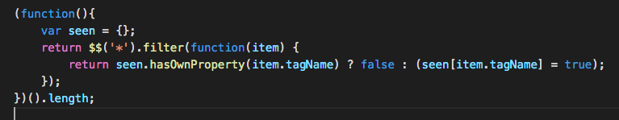

小热身题
题目：给你一个页面，比方说淘宝首页吧，如何得到这个页面里一共用了多少种html标签？
分析题目：首先就是要通过api把所有标签取出来；其次，不同api取出的数据类型不同，比如会生成HTMLCollection、NodeList等,要将其转换成数组；最后，对数组去重。
首先：老师介绍有四个方法取出所有标签
一、通过document.getElementsByTagName(‘*’);生成的数据类型为HTMLCollection

二、通过document.querySelectorAll(‘*’);生成的数据类型为NodeList

三、通过document.all;生成数据类型为HTMLCollection

四、通过浏览器的api，生成数据类型直接为Array

其次：就是把HTMLCollection等转换为Array
万金油方法：
|
|
最后：将数组去重
讨论组大神黄玄给了个牛逼的答案：
|
|
自己的答案

反思
确实如同老师所讲，自己对js原生api、es6相比以前也有了更深的认识。